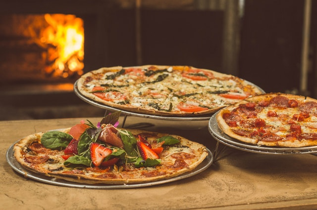

The most expensive pizza

The most expensive pizza in the world costs $12,000
Luis XIII in Salerno, Italy has the world’s most expensive pizza with a price tag of $12,000! This is no ordinary pizza, first the dough is aged perfectly before the chief arrives at your home. Yes, they will create this masterpiece in your home kitchen. Some of the ingredients include, three types of caviar, lobster from Norway, Cilento, bufala mozzarella cheese and grains of pink Australian sea-salt from the Murray River.
The most popular pizza

The most popular pizza topping is pepperoni
It’s not to hard to figure this one out, but now we have the numbers to prove it! In a HarrisPoll® taken in January of 2016, pepperoni was found to be the most popular topping followed by Sausage at number two.
A Pizza was Delivered in Space
A Pizza was Delivered in Space
In 2001, the Russian Space Agency was paid more than a million bucks to deliver a six-inch pizza to the International Space Station. Russian cosmonaut,Yuri Usachov had the honor of being the first person to receive a pizza delivery while in orbit.